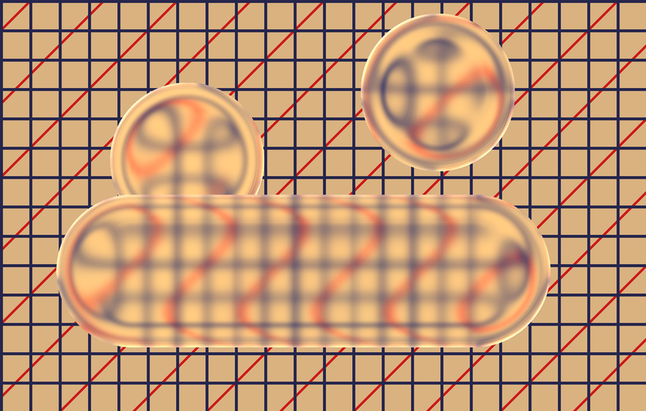
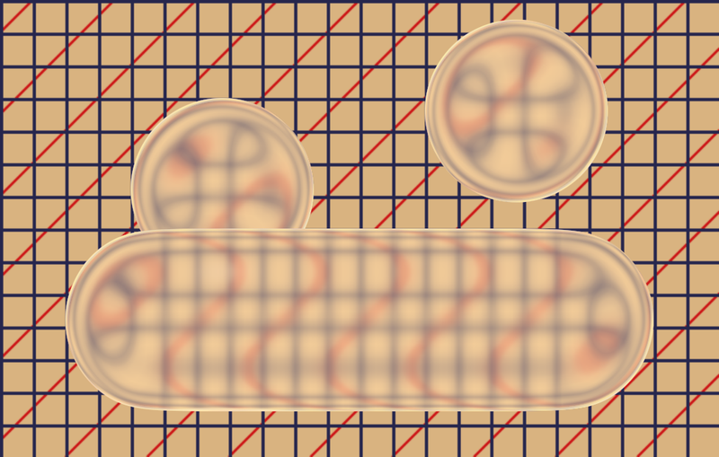
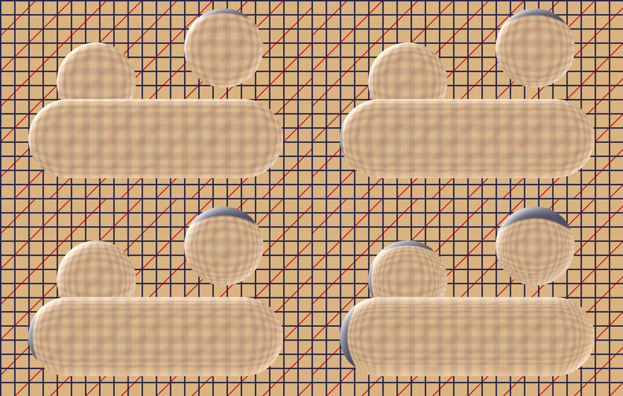
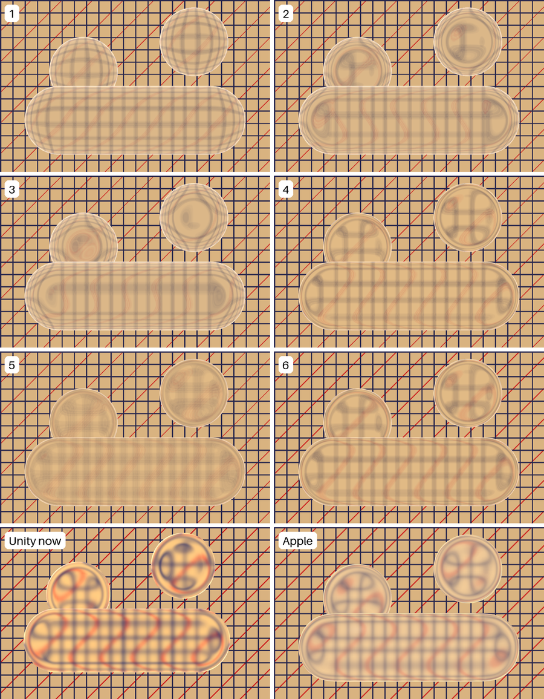
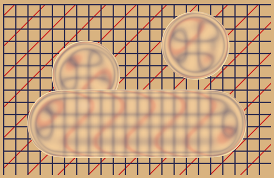
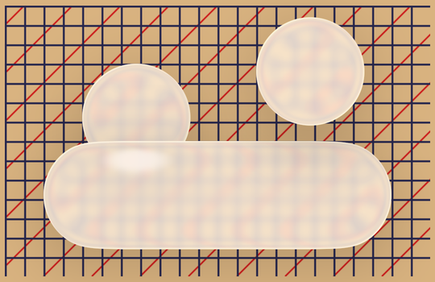
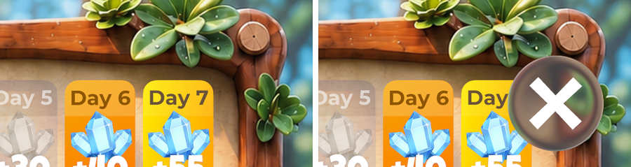
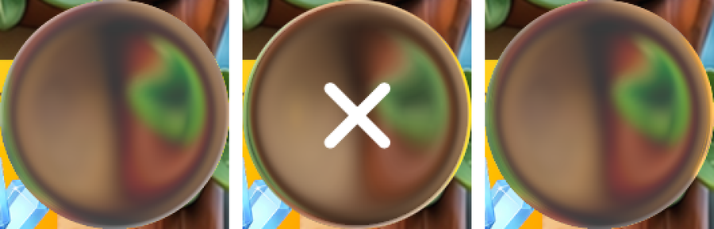
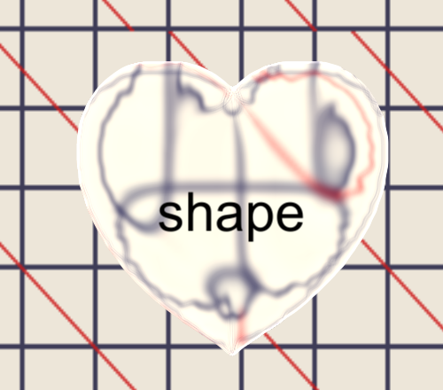
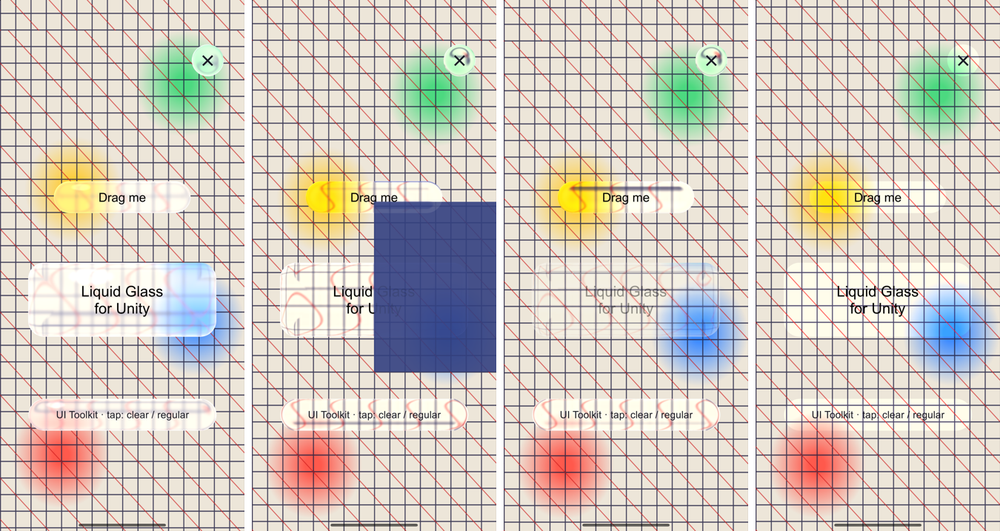

Liquid Glass in Unity
Apple's iOS 26 glass, rebuilt as a Unity shader and tuned against screenshots of Apple's own glass. Below are the steps, the mistakes, and the live shader for you to tune.

.glassEffect(.clear)
Step 1Get the real thing on a test grid
To copy Apple's glass we first had to see it. We rendered Apple's own glass over a grid whose distortion we could measure.
// Apple's glass over a 220 × 140 pt test grid: lines every 10 pt, red diagonals every 25 pt. ZStack(alignment: .topLeading) { Grid().frame(width: 220, height: 140) Color.clear.frame(width: 56, height: 56).glassEffect(.clear, in: Circle()).offset(x: 40, y: 30) Color.clear.frame(width: 180, height: 56).glassEffect(.clear, in: Capsule()).offset(x: 20, y: 70) }

Mistake 1“It's a magnifying lens”

Step 2The glass is a remap
Each point of the glass shows the backdrop from somewhere else, and that place depends only on how far the point is from the shape's middle line. Let x be that distance, scaled to run from 0 on the middle line to 1 on the outline. Near the rim the sampled position swings past the middle to the far side, so the rim shows what lies across the button, and straight lines fold into arcs.
Step 3Fit it to Apple's

Step 4Frost: blur what you refracted
Apple's glass is slightly milky. Blurring the backdrop first and then refracting it looked wrong: the squeezed rim broke into thin, sharp copies of each line. The fix is to blur the refracted image. Each of 32 taps on a golden-angle spiral is refracted where it lands.
A tap that reads the full-resolution image still produces ghost copies. Turn off mip per tap below to see them. Reading a mip level about as wide as the gap between taps smears a thin line into one soft band.
for (int i = 0; i < 32; i++) { float an = i * 2.39996; // golden angle float rr = sqrt((i + .5) / 32); float2 o = float2(cos(an), sin(an)) * rr * _FrostRadius; float2 ts = LiquidShift(p + o, ...); // refract each tap where it lands float w = exp(-4.5 * rr * rr); // gaussian, not a disc soft += w * tex2Dlod(_SharpTex, float4(uv + (o * (1 + _SourceBlur) + ts) * toUv, 0, lod)).rgb; }
Step 5Light
Apple's rim is not a white line drawn on top. It is the light the glass bends into the rim, so a yellow card on one side turns the opposite edge yellow. A hairline catches the light on the side facing it and on the opposite side. With matte (Apple's Clear and Regular switch) the glass turns whiter, softer and more saturated, and a capsule gets a soft highlight.

.clear
.regular. Measured against .clear: 47% whiter, blurred 2 pt more, 1.4× the saturation.

Step 6Any shape
The lens only needs three things at each point: the distance to the outline, the direction to it, and how deep the shape is. A rounded box gives them by formula. For any other outline, the package builds them once from a sprite's alpha, as a signed distance field: an exact distance transform, lightly smoothed so the rim's fold doesn't ripple.

// uGUI glass.shape = mySprite; // the glass takes the sprite's outline // UI Toolkit LiquidGlass.Toolkit(myButton, mySprite);
Step 7Putting it in a real UI: the frame's last pass
Glass needs the finished picture under it, including popups, scrolling lists and video, in the same frame. Sampling the scene in advance always lagged one frame or missed something. So the glass is drawn after everything else:

matte = 1; a popup over half the card (its glass and its label are hidden under it); a CanvasGroup fade of 0.4; lens off.Use itTwo lines
// Package Manager → Install from git URL: https://github.com/frodiwe/UnityLiquidGlass.git // uGUI: add the Liquid Glass Button component. UI Toolkit: using UnityLiquidGlass; LiquidGlass.Toolkit(myButton); LiquidGlass.Settings.matte = 1; // Apple's .regular